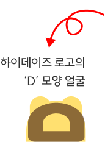
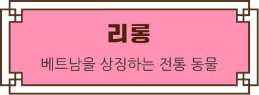
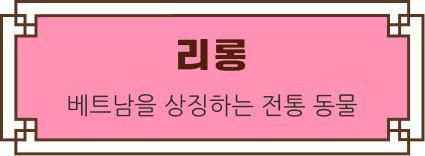
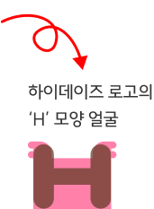
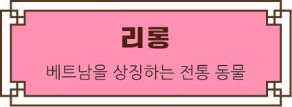

한국과 베트남의 상징 동물
하이데이즈 친구들이에요!



 


한국과 베트남, 두 나라의 명절 알아보기
한국과 베트남의 음식, 놀이, 문화를 쉽고 즐겁게 배워요.
두 나라 문화를 비교해 보며 더 친근하게 느끼고,
서로 닮은 점을 찾다 보면 두 나라가 더 가깝게 느껴질 거예요.
두 나라는 비행기로 4~5시간이면 갈 수 있어요.
1992년 수교 이후 한국과 베트남은 서로 돕는 사이예요.
많은 사람들이 서로의 나라를 방문하며 가깝게 지내고 있답니다.
새해를 맞이하는 한 해의 첫 명절에
꼭 먹는 음식에 대해 알아봐요.
한국의 추석은 풍요를 기원하고,
베트남의 뗏쭝투는 어린이날이에요.
두 나라의 첫 돌이 되는 날과
추모에 대해 살펴보아요.

∙ 다양성과 존중 ∙
- 다양한 문화를 긍정적으로 받아들이기
- 한국과 베트남의 음식·문화∙명절 배우기

∙ 공감 능력 향상 ∙
- 자연스럽게 공감하는 마음 키우기
- 문화를 접하며 함께 놀고 배우는 경험

∙ 사회 적응력 향상 ∙
- 사회에서 유연하게 적응하는 힘 기르기
- 새로운 문화를 접하며 다양한 환경 만나기

서로를 이해하고 함께 어울리며 살아가는 힘을 기르고,
작은 배움이 쌓여 큰 공감과 존중으로 이어져요.